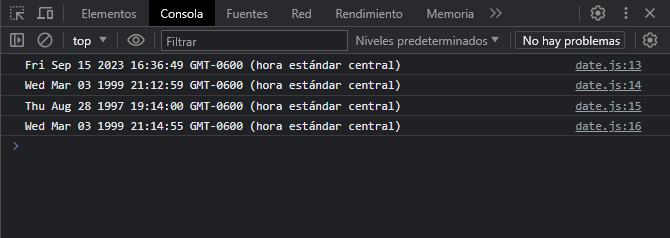
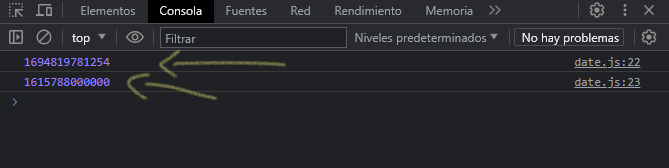
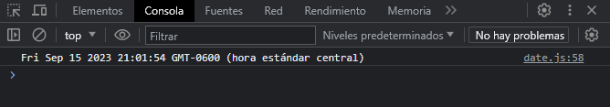
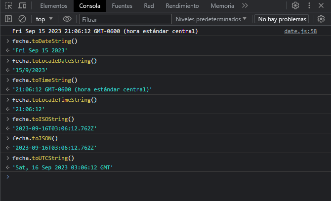

Nota: Es importante tener en cuenta que mientras el valor de la hora en el núcleo del objeto Date esta en UTC, los métodos básicos para recibir la fecha y la hora o sus derivados trabajan todos en la zona horaria local.
Descripción
Una fecha en JavaScript es fundamentalmente especificada como el numero de milisegundos que han pasado desde la época ECMAScript la cual esta definida como el 1 de Enero de 1970, UTC. Esta fecha y hora no son los mismos que en la época Unix (el numero de segundos que han pasado desde la medianoche del 1 de Enero de 197, UTC), el cual es el valor predominante base para representar los valores de fecha y hora en los ordenadores.
Tiempo UNIX
Es un formato numérico utilizado para calcular una fecha en UNIX. Es una forma poco practica y legible para humanos, pero muy eficiente en términos informáticos. Se trata de un numero que representa la cantidad de segundos transcurridos desde la fecha 1 de Enero de 1970, a las 00:00:00.
Crear fechas con #Date
Lo primero, vamos a ver los constructores para saber como podemos construir una variable de tipo Date:
// obtenemos la fecha actual y la guardamos en la variable "fecha"
const fecha = new Date()
// obtenemos la fecha escribiendo una fecha en especifico
const fechaEscrita = new Date("1999/03/03 21:12:59")
// obtenemos la fecha indicando tiempo UNIX
const fechaUnix = new Date(872817240000)
// obtenemos la fecha pasando parámetros numéricos (yyyy, mm, dd, hh, h, m, s)
const fechaNumerica = new Date(1999, 2, 3, 21, 14, 55)
En consola podemos ver el formato fecha que nos termina mostrando:
Usando el constructor podemos obtener la fecha actual sin indicarle ningún parámetro. Pero, podemos indicarle una fecha en especifico pasando como parámetro una cadena de texto como lo hemos hecho en la variable "fechaEscrita".
El constructor también admite como parámetro fechas en tiempo UNIX, para obtener una fecha en tiempo UNIX lo veremos en otra sección.
El constructor acepta parámetros numéricos, ya sea como en formato UNIX, o indicando el anio, el mes, el dia, la hora, el minuto y los segundos, cada uno separado por una coma. Hay que tener en cuenta que en este formato como mínimo son dos parámetros obligatorios, el anio y el mes. Otra cosa en tener en cuenta que al indicar el numero del mes, empiezan desde el cero, osea, el cero representa a Enero, el uno representa a Febrero, y asi sucesivamente.
Fechas con UNIX
El tiempo UNIX se trata de un numero que representa la cantidad de segundos transcurridos desde la fecha 1 de Enero de 1970, a las 00:00:00. Es decir, podemos indicar una fecha en especifico y podemos obtener la cantidad de segundos transcurridos a partir de una fecha indicada.
El tiempo UNIX siendo números resulta muy fácil trabajar y operar con ellos. Teniendo una fecha A y una fecha posterior B, si hacemos la operación B - A nos devuelve el numero de segundos transcurridos entre ambas fechas, con lo que se podría sacar la diferencia de tiempo.
Existen dos métodos que se pueden utilizar para crear fechas, al margen de los constructores anteriores, solo que estos devuelven directamente el Tiempo UNIX de la fecha especificada:
const fechaActualUnix = Date.now()
// especificamos una fecha
const fechaEscrita = new Date(2021, 2, 15)
// convertimos esa fecha especificada e tiempo UNIX
const fechaConvertidaUnix = Date.parse(fechaEscrita)
En consola podemos ver la cantidad de segundos transcurridos en cada fecha que especificamos:
Métodos Getters & Setters
Una vez hemos creado una fecha y tenemos el objeto Date, podemos trabajar muy fácilmente con estas variables a través de sus sencillos métodos. Veremos métodos para obtener fechas (getters) y métodos para cambiar fechas (setters).
Getters: Obtener fechas
const fecha = new Date("2021/03/15 21:45:37.780")
let diaSemana = fecha.getDay() // corresponde al numero del dia, 0 -> domingo, 1 -> lunes, 2 -> martes ...
let diaFecha = fecha.getDate() // fecha del mes
let mes = fecha.getMonth() // corresponde al numero del mes, 0 -> enero, 1 -> febrero, 2 -> marzo ...
let anio = fecha.getFullYear() // anio
let hora = fecha.getHours() // hora
let minutos = fecha.getMinutes() // minuto
let segundos = fecha.getSeconds() // segundo
let milisegundos = fecha.getMilliseconds() // milisegundos
let zonaHoraria = fecha.getTimezoneOffset() // zona Horaria
let tiempoUnix = fecha.getTime() // tiempo UNIX
Setters: Cambiar fechas
Con los métodos setters podemos modificarlas o alterarlas, estos métodos devuelven un Number en tiempo UNIX de la fecha modificada.
let setDiaSemana = fecha.setDate(7)
let setMes = fecha.setMonth(4)
let setAnio = fecha.setFullYear(2000)
let setHora = fecha.setHours(13)
let setMinutos = fecha.setMinutes(26)
let setSegundos = fecha.setSeconds(12)
let setMilisegundos = fecha.setMilliseconds(123)
let setTime = fecha.setTime(872817240000)
Representación de Fechas
Otro detalle mas delicado dentro del trabajo con fechas es a la hora de mostrar una fecha en un formato especifico. Podemos utilizar el formato por defecto que nos ofrece JavaScript, pero lo mas habitual es que queramos hacerlo en otro diferente, utilizando nuestra configuración horaria, abreviaturas u otros detalles. En JavaScript tenemos varios métodos para representar las fechas:
En la captura anterior, podemos ver como es el formato de fecha por defecto, con los métodos podemos cambiar ese formato, veamos un ejemplo:
El método toISOString() devuelve un formato que intenta ser el estándar a la hora de manejar fechas en internet o documentos en general. Básicamente, una regla mnemotecnia es pensar que se escriben desde magnitudes mas altas (anio) hasta las magnitudes mas bajas (milisegundos). La fecha y la hora se separa con una "T" y cada componente con un - o un : dependiendo de si es fecha o es hora. Los milisegundos se separan siempre con .. La "Z" del final indica que es una fecha UTC.